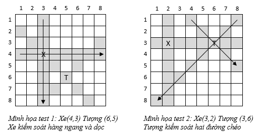

Cho một bàn cờ vua có kích thước 8 hàng 8 cột. Trên bàn cờ có 01 quân xe và 01 quân tượng. Quân xe có thể kiểm soát được đường dọc và đường ngang mà nó đang đứng, kể cả ô vị trí của quân xe. Quân tượng có thể kiểm soát được hai đường chéo mà nó đang đứng, kể cả ô vị trí của quân tượng. Khác với cờ vua bình thường, quân xe và quân tượng trong bài toán này có một đặc điểm là nó không thể bị cản (xem ví dụ để hiểu rõ thêm).
Yêu cầu: Cho vị trí của quân xe và quân tượng trên bàn cờ. Hãy xác định tổng số ô mà quân tượng và quân xe này kiểm soát.
Dữ liệu vào: gồm bốn số nguyên Xd, Xc, Td, Tc mỗi số được ghi cách nhau một khoảng trắng, trong dó Xd và Xc là vị trí dòng và vị trí cột của quân xe, Td và Tc là vị trí dòng và vị trí cột của quân tượng. Dữ liệu cho đảm bảo 1 ≤ Xd, Xc, Td, Tc ≤ 8, đảm bảo quân xe và quân tượng không nằm cùng vị trí.
Dữ liệu ra: là một số nguyên dương là tổng số các ô mà quân tượng và quân xe kiểm soát.
Giải thích:
